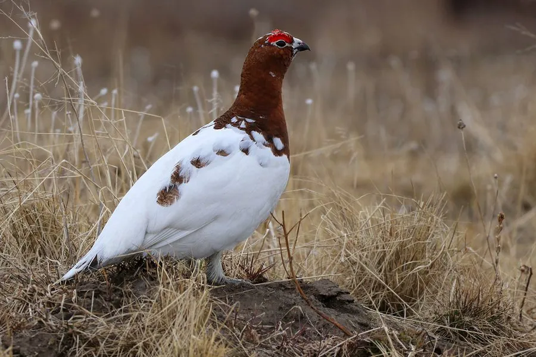

鸟类 · 动物界
雷鸟 Lagopus lagopus

会随季节换羽的北方雉类，夏季棕褐、冬季雪白，能融入冻原和雪地的环境，是北方针叶林和苔原的代表物种。
- 分类
- 门脊索动物门纲鸟纲目鸡形目科雉科属雷鸟属
- 栖息环境
- 苔原、针叶林、森林冻原和灌丛，冬季也利用雪洞躲避严寒
- 地理分布
- 北半球苔原与针叶林带，中国东北和新疆北部有分布记录
- 保护级别
- IUCN 无危（LC）；中国国家二级保护动物
物种志
雷鸟体长 38–43 cm，体重约 0.4–0.8 kg。它最奇特的本领是随季节换羽：夏季羽毛呈棕褐色并带黑色斑纹，与苔原灌丛融为一体；冬季则换上雪白的羽毛，只有尾羽和眼睛周围保留黑色。它的脚趾上长有厚毛，冬天像穿了雪地靴，便于在雪面上行走。
雷鸟分布于北半球的苔原、针叶林和森林冻原，从北欧、俄罗斯到北美北部都有分布，中国东北和新疆北部也有记录。它们以桦树、柳树的嫩芽、花序和浆果为食，冬季常钻进雪洞中躲避严寒和天敌。雷鸟的种群数量会周期性波动，与天敌和食物资源有关。繁殖期雌鸟在地面产卵 6–12 枚，孵化约 21–23 天。由于适应严寒的能力极强，雷鸟成为北方针叶林和苔原生态的代表物种之一。
形态与习性
- 食性桦树、柳树的嫩芽、花序和浆果
- 体长38–43 cm
- 体重约 0.4–0.8 kg
- 繁殖每窝 6–12 枚卵，孵化约 21–23 天
- 寿命野外约 5–8 年
- 换羽夏季棕褐、冬季雪白，随季节换羽
- 脚趾脚趾长有厚毛，冬季像穿了雪地靴
趣味知识
- 雷鸟会随季节换羽，夏季棕褐、冬季纯白，完美融入环境。
- 它脚趾上长着厚毛，冬天像穿了雪地靴，方便在雪面行走。
- 冬季雷鸟会钻进雪洞里过夜，靠雪层保温躲避天敌。
- 雷鸟的种群数量会周期性波动，与天敌和食物有关。